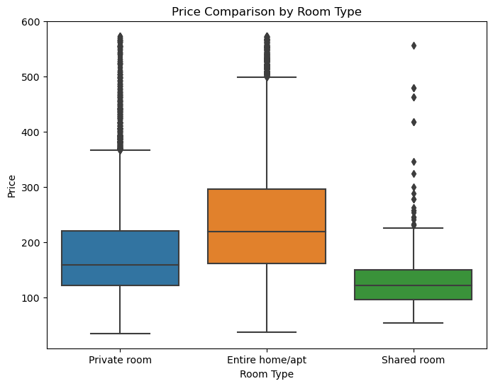

Data Visualization#
import pandas as pd
import matplotlib.pyplot as plt
import seaborn as sns
# import numpy as np
# from scipy import stats
import os
Visualize the correlation matrix#
With the outliers removed, our dataset is now ready for further analysis and model building.
filtered_data =pd.read_csv('data/filtered_data.csv')
# Calculate the correlation matrix
corr_matrix = filtered_data.corr()
# Create a heatmap to visualize the correlation matrix
plt.figure(figsize=(12, 10))
sns.heatmap(corr_matrix, annot=True, cmap="coolwarm", fmt=".2f", linewidths=.5)
# Customize the plot
plt.title('Feature Correlation Heatmap')
plt.xticks(rotation=45, ha='right')
plt.tight_layout()
# Save the figure
plt.savefig('figures/feature_correlation_heatmap.png', bbox_inches='tight')
# Show the plot
plt.show()
/tmp/ipykernel_5975/268800871.py:3: FutureWarning: The default value of numeric_only in DataFrame.corr is deprecated. In a future version, it will default to False. Select only valid columns or specify the value of numeric_only to silence this warning.
corr_matrix = filtered_data.corr()
Boxplot for comparing room types#
plt.figure(figsize=(8, 6))
sns.boxplot(x='Room Type', y='Price', data=filtered_data)
plt.title('Price Comparison by Room Type')
plt.xlabel('Room Type')
plt.ylabel('Price')
plt.savefig('figures/price_comparison_by_room_type', bbox_inches='tight')
plt.show()

Filter data by room type#
filtered_data['Room Type'].value_counts()
Entire home/apt 26177
Private room 12873
Shared room 315
Name: Room Type, dtype: int64
entire_home = filtered_data[filtered_data['Room Type'] == 'Entire home/apt']
private_room = filtered_data[filtered_data['Room Type'] == 'Private room']
shared_room = filtered_data[filtered_data['Room Type'] == 'Shared room']
# Create subplots
fig, axes = plt.subplots(3, 1, figsize=(8, 18))
# Entire home/apt
sns.scatterplot(x='City Center (km)',
y='Price',
data=entire_home,
ax=axes[0], alpha=0.8,
color = "#ee7600"
)
axes[0].set_title('Entire home/apt: Price vs Distance from City Center')
axes[0].set_xlabel('Distance from City Center (km)')
axes[0].set_ylabel('Price')
# Private room
sns.scatterplot(x='City Center (km)',
y='Price',
data=private_room,
ax=axes[1],
alpha=0.8
)
axes[1].set_title('Private room: Price vs Distance from City Center')
axes[1].set_xlabel('Distance from City Center (km)')
axes[1].set_ylabel('Price')
# Shared room
sns.scatterplot(x='City Center (km)',
y='Price',
data=shared_room,
ax=axes[2],
alpha=0.8,
color = "green"
)
axes[2].set_title('Shared room: Price vs Distance from City Center')
axes[2].set_xlabel('Distance from City Center (km)')
axes[2].set_ylabel('Price')
# Save the figure before showing it
plt.savefig('figures/price_vs_distance_from_city_center_by_room_type.png', dpi=300, bbox_inches='tight')
plt.show()
city_stats = filtered_data.groupby('City')['Price'].agg(['mean', 'median'])
# Convert city names to numerical values
city_labels = filtered_data['City'].astype('category').cat.codes
# Calculate the correlation between city and price
city_price_corr = pd.DataFrame({'City': city_labels, 'Price': filtered_data['Price']}).corr(method='pearson').iloc[0, 1]
print("Correlation between city and price:", city_price_corr)
print(city_stats)
if not os.path.exists('result'):
os.makedirs('result')
# Save city_stats DataFrame to a CSV file in the 'result' folder
city_stats.to_csv('results/city_stats.csv')
Correlation between city and price: 0.08425094730069628
mean median
City
Amsterdam 369.803200 368.617158
Athens 145.680222 127.715417
Barcelona 235.001931 196.895292
Berlin 214.763642 185.566047
Budapest 168.058828 152.277107
Lisbon 232.385012 223.264540
Paris 309.631882 289.868580
Rome 198.352167 182.124237
Vienna 223.813612 206.624126
Visualize the relationship between city and price#
# Calculate the average price for each city
city_price = filtered_data.groupby('City')['Price'].mean().sort_values(ascending=False)
plt.figure(figsize=(10, 6))
sns.barplot(x=city_price.index, y=city_price.values)
plt.title('Average Price by City')
plt.xlabel('City')
plt.ylabel('Average Price')
plt.xticks(rotation=45)
plt.savefig('figures/average_price_by_city.png', bbox_inches='tight')
plt.show()

Loop through the x variables and create a separate plot for each#
label=['City', 'Day', 'Room Type',
'Person Capacity', 'Multiple Rooms', 'Business',
'Bedrooms']
x_vars = ['Guest Satisfaction','City Center (km)', 'Metro Distance (km)',
'Attraction Index', 'Normalised Attraction Index',
'Restraunt Index', 'Normalised Restraunt Index']
y_var = 'Price'
for i, x_var in enumerate(x_vars):
plt.figure(i)
sns.scatterplot(x=filtered_data[x_var], y=filtered_data[y_var], alpha=0.8, hue=filtered_data[label[i]])
plt.xlabel(x_var)
plt.ylabel(y_var)
plt.title(f'{y_var} vs {x_var}')
plt.savefig(f'figures/{y_var}_vs_{x_var}.png', dpi=300, bbox_inches='tight')
plt.show()